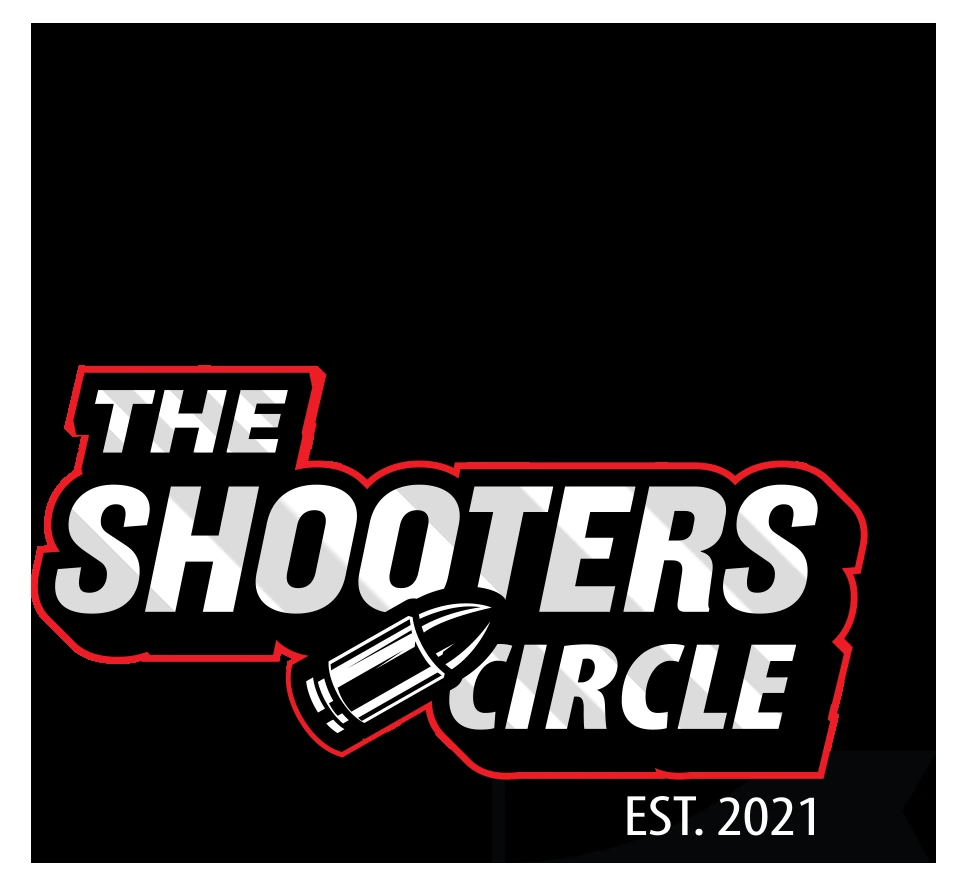
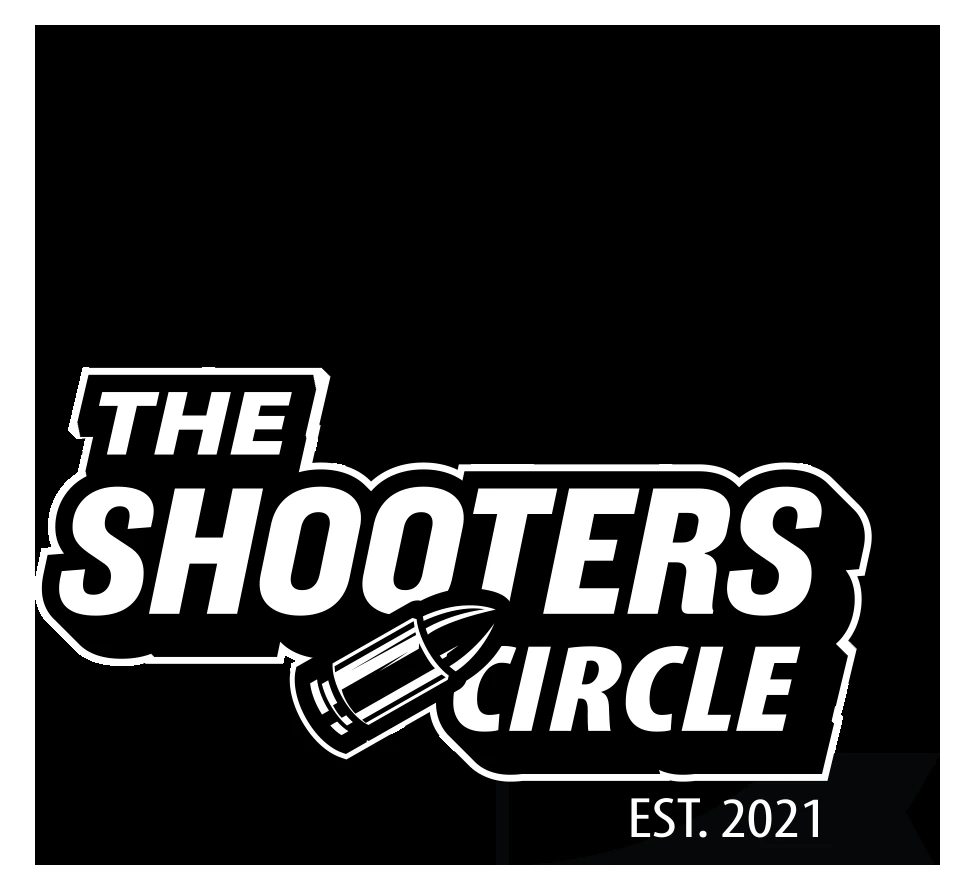
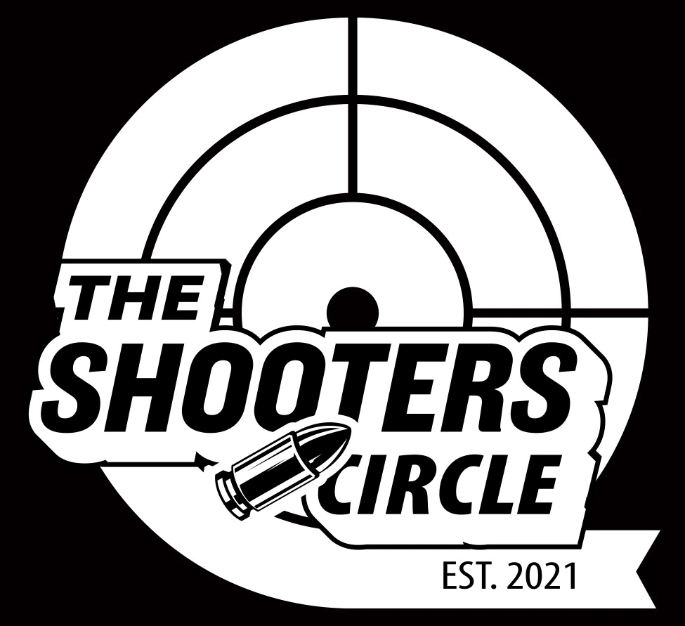
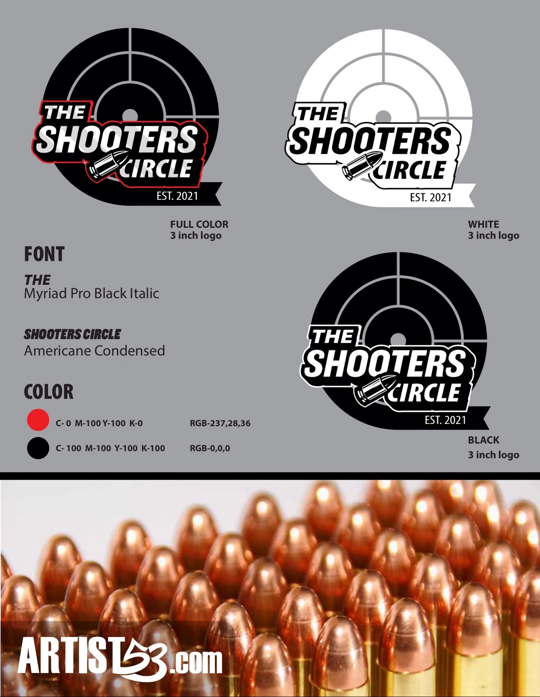
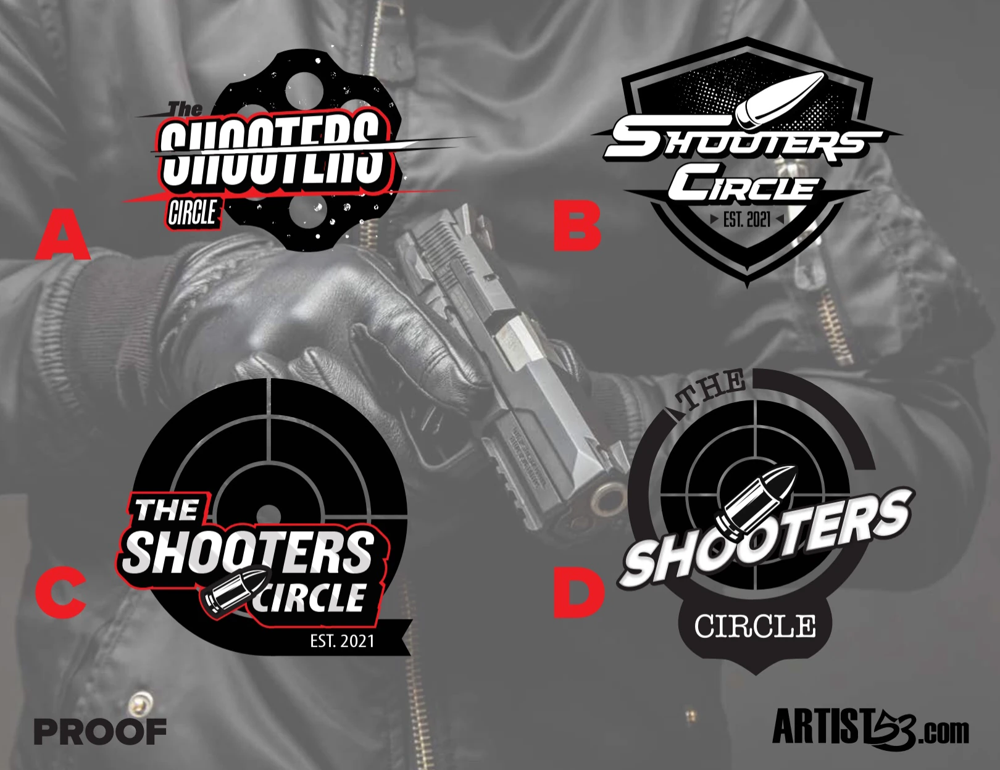

Logo Identity Case Study
The Shooters Circle
A bold identity built around precision, community and a clear shooting-sports visual language.
View The ProjectBack To LogosProject Overview
A Mark With Immediate Impact
The Shooters Circle identity combines a target, strong condensed lettering and a cartridge graphic into one recognizable system. The final mark was designed to stay readable across social media, apparel, signage and smaller print applications.

Identity System
Built For Light And Dark Backgrounds
The logo was developed in color, black and white versions so it could stay consistent across different production needs.


Brand Details
Typography, Color And Scale
The presentation board documents the condensed type system, red-and-black palette and reduced-size applications used to keep the mark practical.

Concept Development
Exploring The Strongest Direction
Several compositions were tested before choosing the target-based circular mark. The final direction delivered the best combination of recognition, balance and movement.
